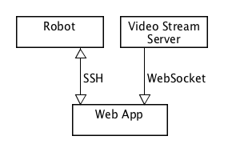
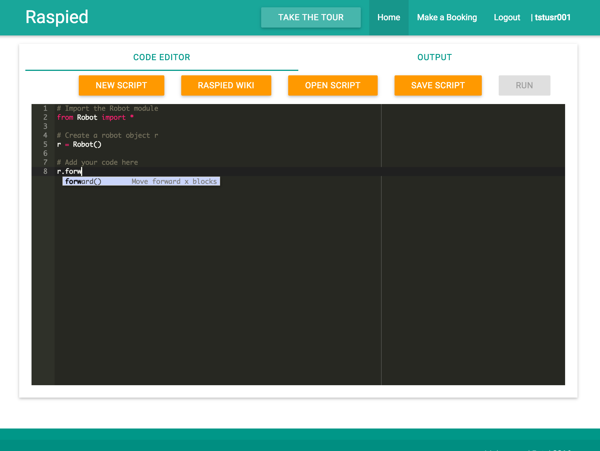
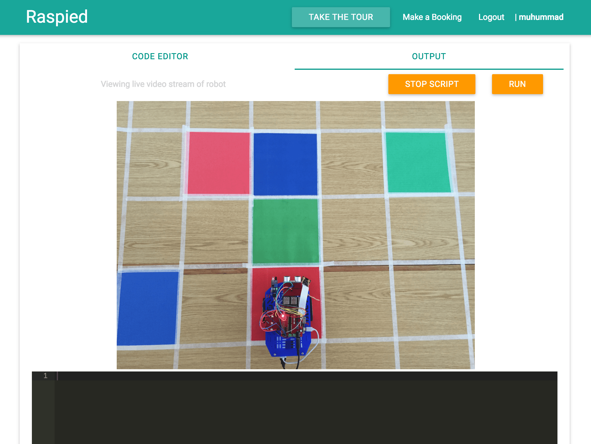
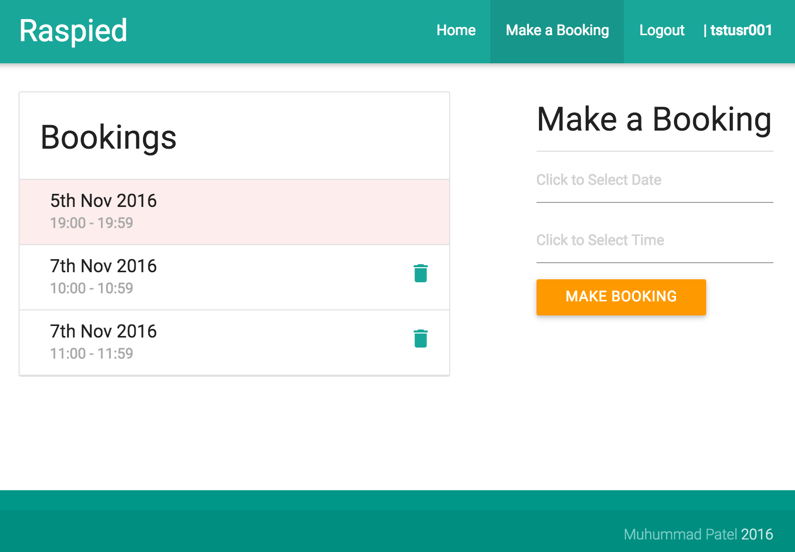

The software engineering component of the RASPIED project invovled the design, implementation, and evaluation of the controlling web app. This web app provides a live video stream of the robot and allows students to write and upload code to the robot. The web app also controls access to the robot via a booking system. The use of robots in Computer Science education has been shown to be effective. One of the key determinants of success is sufficient access to the robot for students. This project aims to improve access to the robot whilst still keeping costs low by allowing shared access to a single robot through a controlling web app. Students are then able to program and debug their solutions off-campus without needing to buy their own robot.
There are three major components to the web app, viz. the website itself (consisting of the back-end and front-end), the robot, and the video stream. The website was built using Python Django, JavaScript, jQuery, and AJAX. The live video stream was implemented using a Raspberry Pi (with an attached Raspberry Pi camera) and a node.js server. The architecture diagram below shows the overall structure of the system.
The web app back-end communicates with the robot over SSH and serves as a mediator for all interactions between the client and the robot. This allows us to manage/control access to the robot. Client interactions with the robot are carried out over a WebSocket connection so that code output can be relayed to the user in realtime.
The code editor is implemented using the Ace Editor JavaScript library. It has been styled to resemble students’ current IDE (Wing IDE) in order to provide them with a familiar environment in which to write their code. Five action buttons have been placed above the editor to allow for quick access to common actions such as running and saving scripts.
Students can upload their code to the robot and run it with a single click. When the user clicks the Run button, their code is sent to the web app over a WebSocket connection. The run request is validated and executed and a§ny output from the robot is collected and sent back to the client over the open WebSocket.
The web app presents students with a live video stream of the robot so that they can see their code running on the robot in real-time. This video stream is captured using a Raspberry Pi camera and is encoded by the connected Raspberry Pi using jsmpeg. The screenshot below shows the output tab with the live video stream of the robot with the output terminal below it.
In order to facilitate shared access to the single robot, the web app uses a booking system whereby students are required to book/reserve the robot before uploading and running their code on it. On the client side, the ’Run’ button is disabled when the student does not have the current booking, and on the server side, we check that the user trying to upload and run code on the robot has the current booking. Trying to upload code to the robot without having the current booking will result in a ’robot access denied’ error message being returned to the user. The screenshot below shows the bookings page including a ist of the user's current bookings (with the current booking highlighted) and the new booking form.
The web app developed for this project has been evaluated based on its usability and whether or not it meets the initial requirements. The System Usability Scale(SUS) was used to determine the usability of the web app.
The web app developed in this project has successfully met initial requirements and has achieved an ’excellent’ usability score. We have achieved the initial goal of this project, which was to develop a supporting web app for the RASPIED educational robot platform. We hope that this work will be of benefit to future generations of budding Computer Scientists.